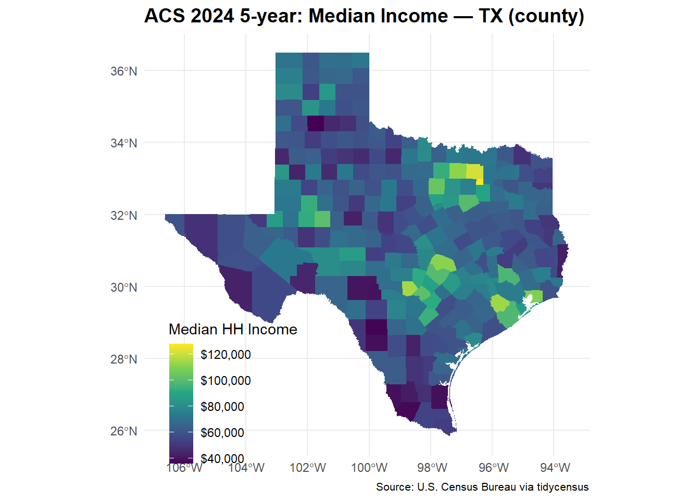

# Packages needed to retrieve, organize, map, and save ACS data
library(tidycensus) # Download ACS estimates and calculate margins of error
library(tigris) # Download Census geographic boundaries
library(sf) # Work with spatial data and map geometry
library(dplyr) # Organize, calculate, select, and sort variables
library(tidyr) # Reshape tidy data when necessary
library(ggplot2) # Create the choropleth map
library(readr) # Save the finished dataset as a CSV file
# Cache geographic boundaries so they do not need to be downloaded repeatedly
options(tigris_use_cache = TRUE)Assignment 3: ACS via tidycensus
Part 1: Set-up packages
This chunk loads all the packages required for the assignment. It also tells tigris to reuse downloaded geographic boundaries.
Part 2: Choose the geography and ACS variables
This chunk searches the 2024 ACS five-year variable list and establishes the parameters for the analysis. The unit of analysis is the Texas county. Median household income will be used for the map, while the poverty count and its denominator will be used to calculate a county poverty rate.
# Explore the variables available in the 2024 ACS 5-year dataset
# Do not use the deprecated `cache` argument
vars <- load_variables(2024, "acs5")
# Display the first 10 variables whose codes begin with B19
vars |>
dplyr::filter(grepl("^B19", name)) |>
dplyr::slice_head(n = 10)# A tibble: 10 × 4
name label concept geography
<chr> <chr> <chr> <chr>
1 B19001A_001 Estimate!!Total: Household Income … tract
2 B19001A_002 Estimate!!Total:!!Less than $10,000 Household Income … tract
3 B19001A_003 Estimate!!Total:!!$10,000 to $14,999 Household Income … tract
4 B19001A_004 Estimate!!Total:!!$15,000 to $19,999 Household Income … tract
5 B19001A_005 Estimate!!Total:!!$20,000 to $24,999 Household Income … tract
6 B19001A_006 Estimate!!Total:!!$25,000 to $29,999 Household Income … tract
7 B19001A_007 Estimate!!Total:!!$30,000 to $34,999 Household Income … tract
8 B19001A_008 Estimate!!Total:!!$35,000 to $39,999 Household Income … tract
9 B19001A_009 Estimate!!Total:!!$40,000 to $44,999 Household Income … tract
10 B19001A_010 Estimate!!Total:!!$45,000 to $49,999 Household Income … tract # Select Texas as the state for the analysis
state_abbr <- "TX"
# Select counties as the geographic unit
geo_level <- "county" # options: state, county, tract, block group
# Select income, poverty count, and poverty denominator variables
my_vars <- c(
income = "B19013_001", # median household income
pov = "B17001_002", # people below poverty
povden = "B17001_001" # poverty universe = denominator
)
# Select the required ACS year
year_acs <- 2024
# Select the ACS 5-year survey
survey <- "acs5"Part 3: Download the data and calculate the poverty rate
This chunk downloads the 2024 ACS estimates, margins of error, and geographic boundaries for Texas counties. The E suffix identifies an estimate, while the M suffix identifies its margin of error. It then calculates the poverty rate and propagates the uncertainty using moe_prop().
# Download the selected ACS variables and Texas county geometry
# Wide output produces one row per county with separate estimate and MOE columns
acs_wide <- get_acs(
geography = geo_level, # Use counties as the geographic unit
variables = my_vars, # Download the three selected ACS variables
state = state_abbr, # Limit the data to Texas
year = year_acs, # Use the 2024 ACS
survey = survey, # Use the ACS 5-year estimates
geometry = TRUE, # Retain county boundaries for mapping
output = "wide" # Produce one row for each county
)
# Derive the poverty rate and carry its margin of error through
acs_wide <- acs_wide |>
mutate(
pov_rate = povE / povdenE, # Divide poverty count by its denominator
pov_moe = moe_prop( # Calculate the MOE for the poverty rate
povE, # Poverty-count estimate
povdenE, # Poverty-denominator estimate
povM, # MOE for the poverty-count estimate
povdenM # MOE for the denominator estimate
)
)
# Check the completed spatial dataset
acs_wideSimple feature collection with 254 features and 10 fields
Geometry type: MULTIPOLYGON
Dimension: XY
Bounding box: xmin: -106.6456 ymin: 25.83738 xmax: -93.50829 ymax: 36.5007
Geodetic CRS: NAD83
First 10 features:
GEOID NAME incomeE incomeM povE povM povdenE povdenM
1 48287 Lee County, Texas 76371 8546 1986 594 17524 58
2 48037 Bowie County, Texas 59803 2992 13997 1348 86368 135
3 48273 Kleberg County, Texas 61292 4466 8077 1250 28749 353
4 48229 Hudspeth County, Texas 48600 11506 508 228 2929 13
5 48419 Shelby County, Texas 49776 6129 4917 835 23887 91
6 48301 Loving County, Texas 51250 617 2 2 33 30
7 48339 Montgomery County, Texas 97701 2366 64224 4653 680151 718
8 48029 Bexar County, Texas 72341 701 296387 9067 2027961 1300
9 48245 Jefferson County, Texas 60026 1694 46448 2562 238359 459
10 48457 Tyler County, Texas 55396 6988 3229 569 18037 130
geometry pov_rate pov_moe
1 MULTIPOLYGON (((-97.30648 3... 0.11333029 0.033894295
2 MULTIPOLYGON (((-94.74663 3... 0.16206234 0.015605577
3 MULTIPOLYGON (((-97.3178 27... 0.28094890 0.043342708
4 MULTIPOLYGON (((-105.998 32... 0.17343803 0.077838461
5 MULTIPOLYGON (((-94.51143 3... 0.20584418 0.034947455
6 MULTIPOLYGON (((-103.9839 3... 0.06060606 0.025248351
7 MULTIPOLYGON (((-95.83024 3... 0.09442609 0.006840402
8 MULTIPOLYGON (((-98.80655 2... 0.14615025 0.004470012
9 MULTIPOLYGON (((-94.44491 3... 0.19486573 0.010741941
10 MULTIPOLYGON (((-94.65799 3... 0.17902090 0.031519868nrow(acs_wide)[1] 254names(acs_wide) [1] "GEOID" "NAME" "incomeE" "incomeM" "povE" "povM"
[7] "povdenE" "povdenM" "geometry" "pov_rate" "pov_moe" Part 4: Produce the map, tables, uncertainty check, and CSV file
This chunk produces all the main assignment outputs:
A choropleth map of median household income
The ten counties with the highest poverty rates
The ten counties with the lowest poverty rates
Poverty-rate margins of error
Confidence-interval limits for evaluating the rankings
A CSV file containing the completed ACS dataset
# Create a choropleth map of median household income
ggplot(acs_wide) +
geom_sf(
aes(fill = incomeE), # Fill each county according to its income estimate
color = NA # Remove county-border lines
) +
scale_fill_viridis_c(
name = "Median HH Income", # Give the map legend a clear title
labels = scales::label_dollar()
) +
labs(
title = paste0(
"ACS ", year_acs,
" 5-year: Median Income — ",
state_abbr, " (", geo_level, ")"
),
caption = "Source: U.S. Census Bureau via tidycensus"
) +
theme_minimal() +
theme(
text = element_text(family = "Palatino"), # Drop family if unavailable
plot.title = element_text(size = 14, face = "bold"),
plot.caption = element_text(size = 8),
legend.position = "inside",
legend.position.inside = c(0.2, 0.15)
)
# Create a table of the 10 counties with the highest poverty rates
top10 <- acs_wide |>
st_drop_geometry() |> # Remove geometry because it is not needed
arrange(desc(pov_rate)) |> # Sort from highest to lowest poverty rate
select(
NAME,
pov_rate,
pov_moe,
povE,
povM
) |>
slice_head(n = 10) # Keep the first 10 counties
# Create a table of the 10 counties with the lowest poverty rates
bottom10 <- acs_wide |>
st_drop_geometry() |> # Remove geometry because it is not needed
arrange(pov_rate) |> # Sort from lowest to highest poverty rate
select(
NAME,
pov_rate,
pov_moe,
povE,
povM
) |>
slice_head(n = 10) # Keep the first 10 counties
# Display the two tables
top10 NAME pov_rate pov_moe povE povM
1 Dimmit County, Texas 0.4110586 0.08875886 3390 732
2 Zapata County, Texas 0.3839325 0.06042973 5190 818
3 Zavala County, Texas 0.3392113 0.09532959 3174 892
4 Starr County, Texas 0.3351580 0.03229430 21981 2118
5 Duval County, Texas 0.3327076 0.08395552 3013 761
6 Presidio County, Texas 0.3200000 0.12776257 1896 757
7 Edwards County, Texas 0.3186549 0.23243917 398 304
8 Jim Hogg County, Texas 0.3142733 0.11147440 1451 515
9 Swisher County, Texas 0.3009816 0.06897943 1901 436
10 Kleberg County, Texas 0.2809489 0.04334271 8077 1250bottom10 NAME pov_rate pov_moe povE povM
1 Rockwall County, Texas 0.04038319 0.006878397 4949 843
2 Sterling County, Texas 0.04323570 0.028825941 62 42
3 Sutton County, Texas 0.04509202 0.028526638 147 93
4 Kendall County, Texas 0.05029487 0.014324837 2405 685
5 Armstrong County, Texas 0.05194805 0.027989677 92 50
6 Foard County, Texas 0.05573419 0.043883153 52 42
7 Roberts County, Texas 0.05649038 0.038729854 47 33
8 Loving County, Texas 0.06060606 0.025248351 2 2
9 Hemphill County, Texas 0.06191075 0.032366749 197 103
10 Collin County, Texas 0.06234559 0.003548944 71971 4097# Add confidence-interval limits to help check uncertainty in the rankings
ranked_areas <- bind_rows(
top10 |> mutate(table_group = "Highest poverty rates"),
bottom10 |> mutate(table_group = "Lowest poverty rates")
) |>
mutate(
pov_lower = pmax(0, pov_rate - pov_moe), # Lower confidence limit
pov_upper = pmin(1, pov_rate + pov_moe) # Upper confidence limit
) |>
select(
table_group,
NAME,
pov_rate,
pov_moe,
pov_lower,
pov_upper
)
# Display rates, MOEs, and confidence-interval limits
ranked_areas table_group NAME pov_rate pov_moe
1 Highest poverty rates Dimmit County, Texas 0.41105857 0.088758863
2 Highest poverty rates Zapata County, Texas 0.38393253 0.060429732
3 Highest poverty rates Zavala County, Texas 0.33921129 0.095329589
4 Highest poverty rates Starr County, Texas 0.33515797 0.032294300
5 Highest poverty rates Duval County, Texas 0.33270760 0.083955520
6 Highest poverty rates Presidio County, Texas 0.32000000 0.127762572
7 Highest poverty rates Edwards County, Texas 0.31865492 0.232439173
8 Highest poverty rates Jim Hogg County, Texas 0.31427334 0.111474404
9 Highest poverty rates Swisher County, Texas 0.30098163 0.068979431
10 Highest poverty rates Kleberg County, Texas 0.28094890 0.043342708
11 Lowest poverty rates Rockwall County, Texas 0.04038319 0.006878397
12 Lowest poverty rates Sterling County, Texas 0.04323570 0.028825941
13 Lowest poverty rates Sutton County, Texas 0.04509202 0.028526638
14 Lowest poverty rates Kendall County, Texas 0.05029487 0.014324837
15 Lowest poverty rates Armstrong County, Texas 0.05194805 0.027989677
16 Lowest poverty rates Foard County, Texas 0.05573419 0.043883153
17 Lowest poverty rates Roberts County, Texas 0.05649038 0.038729854
18 Lowest poverty rates Loving County, Texas 0.06060606 0.025248351
19 Lowest poverty rates Hemphill County, Texas 0.06191075 0.032366749
20 Lowest poverty rates Collin County, Texas 0.06234559 0.003548944
pov_lower pov_upper
1 0.32229970 0.49981743
2 0.32350280 0.44436227
3 0.24388170 0.43454088
4 0.30286367 0.36745227
5 0.24875208 0.41666312
6 0.19223743 0.44776257
7 0.08621575 0.55109410
8 0.20279893 0.42574774
9 0.23200220 0.36996107
10 0.23760619 0.32429161
11 0.03350479 0.04726158
12 0.01440976 0.07206164
13 0.01656539 0.07361866
14 0.03597003 0.06461970
15 0.02395837 0.07993773
16 0.01185104 0.09961734
17 0.01776053 0.09522024
18 0.03535771 0.08585441
19 0.02954400 0.09427750
20 0.05879665 0.06589453# Save the completed nonspatial data as a CSV file
write_csv(
st_drop_geometry(acs_wide),
paste0("acs_", state_abbr, "_", year_acs, ".csv")
)4(a) Map Interpretation
The map shows substantial variation in median household income across Texas counties. Higher-income counties appear primarily around major metropolitan areas, especially the Dallas–Fort Worth, Austin, and Houston regions. Many counties in South Texas, along the Rio Grande border, and in parts of West Texas have lower median household incomes. Overall, the pattern suggests that counties near large urban economies tend to have higher household incomes than many rural and border counties.
4(b) Table Interpretation
The highest estimated poverty rate is in Dimmit County at approximately 41.1%, followed by Zapata County at 38.4% and Zavala County at 33.9%. Many counties in the highest-poverty group are located in South Texas or near the Texas–Mexico border. In contrast, Rockwall County has the lowest estimated poverty rate at approximately 4.0%, followed by Sterling County at 4.3% and Sutton County at 4.5%. The margins of error vary substantially across counties, meaning the estimated ordering should be interpreted cautiously, particularly for counties with relatively large margins of error.
4(c) Uncertainty Check
Dimmit County and Zapata County provide one clear example of overlapping confidence intervals.
Dimmit County: estimated poverty rate = 41.1%, MOE = 8.9 percentage points, interval = 32.2%–50.0%.
Zapata County: estimated poverty rate = 38.4%, MOE = 6.0 percentage points, interval = 32.4%–44.4%.
The two intervals overlap substantially. Therefore, although Dimmit County is ranked above Zapata County based on the point estimates, the data do not provide strong evidence that Dimmit County’s true poverty rate is higher. Sampling uncertainty could reverse or eliminate the apparent difference. The ranking should consequently be treated as descriptive rather than as a definitive ordering of the counties.
4(d) Methods Note
This analysis uses 2024 American Community Survey five-year estimates for Texas counties. Counties were selected because they provide meaningful geographic comparisons while remaining readable on a statewide map. Median household income (B19013_001) was mapped to show the geographic distribution of economic resources. Poverty was measured using the population below the poverty level (B17001_002) divided by the population for whom poverty status was determined (B17001_001). Using a rate instead of a raw count prevents counties with larger populations from appearing more disadvantaged simply because they contain more residents. I retained the ACS margins of error and used moe_prop() to propagate uncertainty into the calculated poverty rate. The margins of error show that some county estimates are much less precise than others. Several confidence intervals overlap, so small differences between counties should not be interpreted as definitive differences in their true poverty rates. Consequently, the top-and-bottom rankings are descriptive and should be interpreted cautiously.